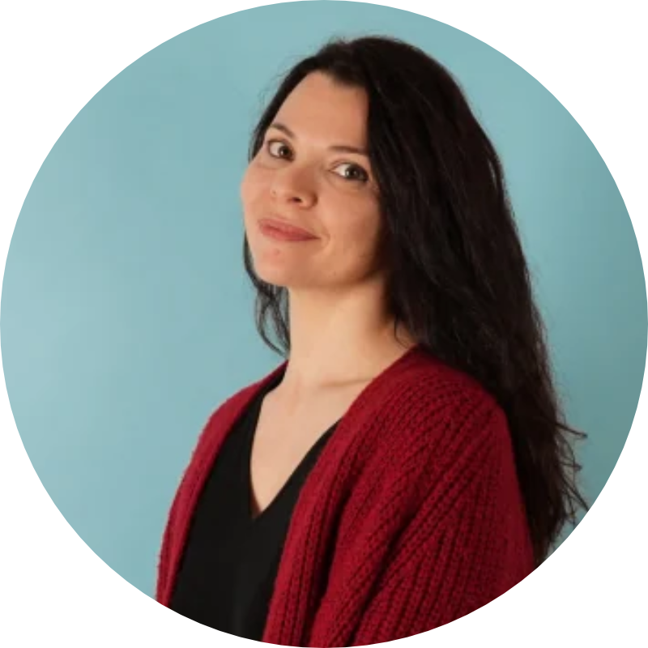

Persone e professionisti
Accompagno chi desidera maggiore consapevolezza, relazioni più serene e strumenti per affrontare il cambiamento, valorizzando le proprie risorse personali e professionali.
Giada Pagani · Counselor e dottoressa in comunicazione
Counseling narrativo-gestaltico e comunicazione per valorizzare le tue risorse, migliorare le relazioni e dare forma al tuo percorso.

Chi sono
Sono la Dott.ssa Giada Pagani, counselor narrativa e gestaltica specializzata in relazione e laureata in Scienze della Comunicazione.
Da oltre 15 anni mi occupo di comunicazione, accompagnando persone, professionisti, scuole e aziende a raccontare la propria identità, valorizzare la propria unicità e comunicare in maniera autentica ed efficace.
Dopo un percorso di formazione specialistica e laboratori esperienziali, mi sono formata nel counseling relazionale applicato ai contesti scolastici, aziendali, socio-sanitari ed educativi, approfondendo la Gestalt, la narrazione, la fotografia e la scrittura creativa e autobiografica.
La mia formazione in Scienze della Comunicazione e il master in marketing digitale e comunicazione mi hanno permesso di sviluppare competenze come content manager, docente di comunicazione, brand & communication strategist, scrittrice e giornalista.
Oggi integro queste esperienze in un approccio che unisce ascolto, consapevolezza, creatività e strategie concrete, accompagnando le persone a riconoscere le proprie risorse e a individuare nuove possibilità personali e professionali.
Credo nel valore delle parole, delle immagini e delle storie come strumenti di espressione, conoscenza e cambiamento.
A chi mi rivolgo
Accompagno chi desidera maggiore consapevolezza, relazioni più serene e strumenti per affrontare il cambiamento, valorizzando le proprie risorse personali e professionali.
Affianco imprese e gruppi di lavoro con percorsi di comunicazione strategica, storytelling e competenze relazionali, per una comunicazione più autentica ed efficace.
Percorsi formativi ed esperienziali per studenti, insegnanti, genitori, caregiver e operatori, dedicati all'espressione personale, all'inclusione e alla comunicazione affettiva.
Approccio
Ogni persona custodisce una storia, un insieme di esperienze, emozioni, risorse e possibilità. Attraverso il counseling, accompagno le persone a esplorare il proprio modo di vivere le relazioni, comunicare e affrontare le scelte quotidiane.
Uno spazio di confronto rispettoso, nel quale esprimersi liberamente e riconoscere i propri bisogni.
Prestare attenzione alle sensazioni, ai gesti e ai segnali del corpo per esplorare il proprio modo di vivere le esperienze.
Raccontare la propria storia, anche attraverso journaling, scrittura autobiografica e fotografia, per riconoscere risorse, significati e nuovi punti di vista.
Definire obiettivi SMART e costruire insieme strategie concrete, valorizzando la capacità di individuare autonomamente le proprie possibilità.
Servizi

Percorsi personalizzati dedicati a chi desidera esplorare le proprie risorse, migliorare le relazioni, affrontare momenti di cambiamento e definire nuovi obiettivi personali o professionali.
Aree di lavoro

Strumenti creativi ed esperienziali che integrano scrittura autobiografica, journaling, fotografia e narrazione per esplorare la propria storia, esprimersi con autenticità e riconoscere nuove prospettive.
Aree di lavoro

Consulenze dedicate a professionisti, imprenditori e aziende che desiderano valorizzare la propria identità e costruire una comunicazione autentica, strategica ed efficace.
Aree di lavoro

Percorsi formativi, laboratori e progetti personalizzati per aziende, scuole, strutture sanitarie e socio-educative, dedicati alla comunicazione, alle competenze relazionali e alla valorizzazione delle risorse personali.
Aree di lavoro
Come funziona
Primo passo
Un primo contatto per comprendere le tue esigenze, conoscere i tuoi obiettivi e valutare insieme quale percorso possa essere più adatto.
Secondo passo
Individuiamo le risorse, gli strumenti e le strategie più coerenti con la tua situazione personale o professionale.
Terzo passo
Attraverso consulenze personalizzate esploriamo consapevolezza, comunicazione e relazioni, con strumenti narrativi, gestaltici e creativi.
Quarto passo
Trasformiamo quanto emerso in azioni concrete e obiettivi definiti, valorizzando la tua capacità di scegliere in autonomia i prossimi passi.
Dove ricevo
FAQ
È il percorso di accompagnamento non clinico che propongo: integro ascolto, narrazione, consapevolezza ed espressione personale per aiutarti a valorizzare le tue risorse e a definire obiettivi concreti.
Accompagno chi desidera acquisire maggiore consapevolezza, migliorare la comunicazione e le relazioni, affrontare scelte personali o professionali e individuare nuove possibilità.
No, non è necessario possedere competenze artistiche o fotografiche. Utilizzo la scrittura e la fotografia come strumenti di espressione e riflessione, nel rispetto delle caratteristiche di ciascuno.
Sì, propongo consulenze di comunicazione, attività formative e progetti personalizzati dedicati ad aziende, scuole, strutture sanitarie e socio-educative.
Puoi contattarmi per telefono, via email o attraverso il modulo presente sul sito: ascolterò le tue esigenze e ti darò informazioni sulle modalità e sulla disponibilità delle consulenze.
Contatti